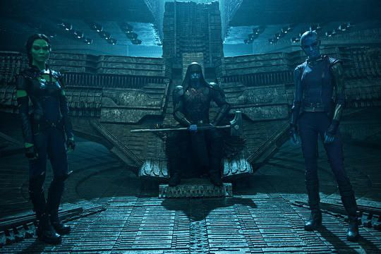
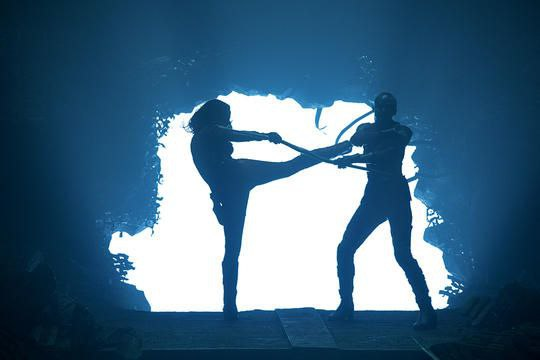
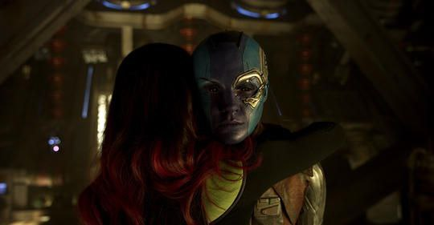
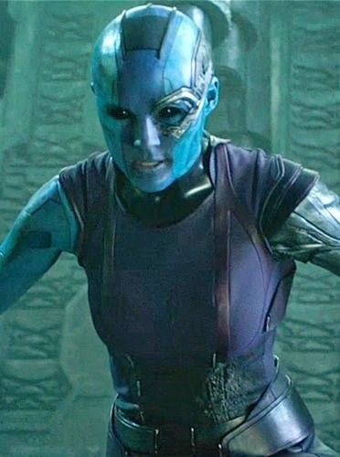
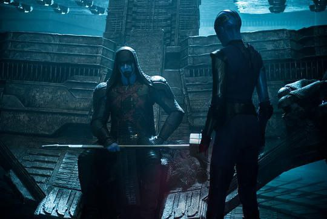
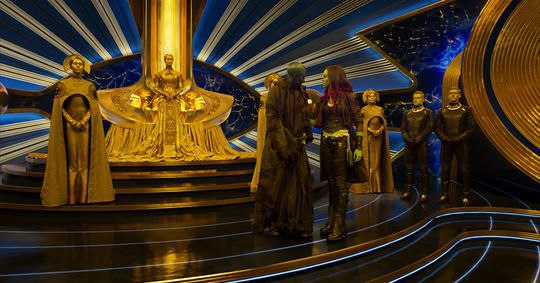
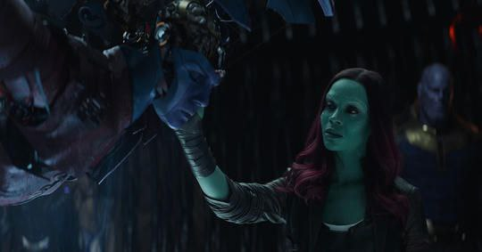
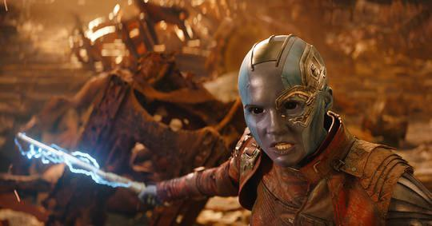

The fierce warrior Nebula is the adopted daughter of Thanos and the “sister” of Gamora. As the Mad Titan raised his “daughters,” he trained the two in combat, often forcing them to face off against each other.
Biography
From Luphomoid to Lackey
Nebula was born to the Luphomoids, a race of humanoid aliens with blue and purple skin. Some time ago, Thanos killed her family and adopted her as a daughter, raising her to be a galactic warrior on his behalf. It is most likely that the Mad Titan had wiped out half her species, like he did with so many others, in his “noble” quest to bring balance to the universe.
During her upbringing, Nebula was trained to fight under Kree warlord Ronan the Accuser, alongside Gamora and another disciple of Thanos, Korath the Pursuer, to become a “Galaxy-Class Killer.”

Her Victim’s Screams Could Be Heard Across the Galaxy
An invaluable deputy of Kree leader Ronan the Accuser, Nebula is one of the deadliest assassins in the galaxy, along with her “sister” Gamora. During their childhood training, Gamora and Nebula were forced to spar with one another. In an effort to make both “daughters” equal, Thanos forced cybernetic enhancements on Nebula.
Nevertheless, her bio-mechanical improvements do make it harder for Nebula to take damage, and even allow for some self-healing if all the necessary parts are on hand. For example, if she loses a hand, she can just replace it with another robotic one.
With her proficient training and enhancements, Nebula proves to be a formidable opponent. She has on two occasions bested Gamora in combat, and even landed a few blows on Thanos. Her weapons of choice are her electroshock batons, which can be combined to create a staff.

In addition to her enhanced physical and deadly prowess, Nebula is an expert pilot, maneuvering a M-ship and Neocrocraft with ease.
Surrounded By Idiots
Despite showing loyalty to her “father” Thanos, Nebula’s two biggest enemies are her “sister” Gamora and Thanos. As a child, Nebula relies on Gamora, as the only person who could provide her with what she wants most—a sister and ally against Thanos. However, in training to be weapons for Thanos and forced to compete with each other, Nebula endures excruciatingly painful body modifications as a result of losing to her “sister,” who never once relents. Over time, her resentment towards Gamora and Thanos grows to hatred and a need to best them both.
Entrusted with the mission to help Ronan the Accuser acquire the Orb on Morag and defeat Xandar, this sets Ronan, Nebula, and Korath the Pursuer in direct opposition with the Nova Corps, as well as Gamora and the rest of the Guardians of the Galaxy—Drax the Destroyer, Rocket Raccoon, Groot, and Star-Lord, who stole the Orb before Korath was able to retrieve it.

Complicated in nature, Gamora and Nebula’s relationship changes once they both break free from Thanos. Failing to defeat Xandar and Gamora at the side of Ronan, Nebula goes off on her own. Arrested by the Sovereign, Gamora enlists the Guardians to save her, but Nebula still looks upon her “sister” with hatred and contempt. On Ego’s home planet, Gamora and Nebula fight, resulting in Nebula revealing the anger and pain their childhood caused.
Enemy of My Enemy
As Thanos begins plans to obtain all six Infinity Stones, he sends his “daughters” Nebula and Gamora to serve Ronan the Accuser, whom Nebula trained under, on his mission to acquire the Power Stone, housed in the Orb at the time. Nebula seeks to be Ronan’s favorite and right-hand woman, pledging her allegiance to him when he harnesses the Power Stone’s energy and threatens the Mad Titan.
On Berhert, as a captive to the Guardians, Nebula is able to change her circumstances when the Ravagers, led by Taserface, mutiny against Yondu. With a new cybernetic gifted by Kraglin and a M-ship, Nebula and Taserface’s Ravagers form an alliance to collect the Sovereign high priestess Ayesha’s hefty bounty on the Guardians of the Galaxy. However, the “sisters” end up forming a shaky alliance after discovering the true nature of Ego and his planet. After defeating Ego, Nebula is offered a spot on the Guardians, but refuses, stating that she must kill Thanos if she is ever to be at peace with herself.
Years later, still determined to kill her “father,” Nebula fights alongside Guardians Star-Lord, Drax, and Mantis, Avengers Iron Man and Spider-Man, and the Master of the Mystic Arts Doctor Strange, against Thanos.

A Mercenary’s Conquests
After Gamora’s betrayal and defection, Nebula, Kree leader Ronan the Accuser and Thanos devotee Korath the Pursuer pursued Gamora and other Kyln prisoners on Knowhere. Following an altercation on the planet, Nebula blew up Gamora’s ship and left her to die out in space while retrieving the Orb, which housed an Infinity Stone, that her Master sought.

The merciless assassin allied with Ronan, who affixed the Power Stone to his hammer, harnessing its power. As the most powerful being in the galaxy, Ronan planned on destroying Xandar, a sworn enemy of the Kree empire, and then destroying Thanos himself. On Xandar, an all-out battle ensued between the Kree and the Nova Corps, the Ravagers, and the Guardians of the Galaxy
Nebula confronted the Guardians shortly after they make their way into the Dark Aster, in the hopes of stopping Ronan. Knocked back by Drax the Destroyer, Nebula’s bio-mechanical improvements got her back in the game to fight Gamora, who gained the upper hand for a short while and nearly killed her “sister.” However, Gamora pushed Nebula out of the Aster. Hanging on for dear life, Gamora asked Nebula to join the Guardians or, at the very least, stand against Ronan. Nebula refused and fell directly onto a Ravager vessel, which she commandeered for her own.

Her whereabouts unknown following the Battle of Xandar, Nebula was apprehended by the genetically-enhanced Sovereign for attempting to steal their main power source, Anulax Batteries. Handed over into the custody of the Guardians, Nebula was held captive on the Milano. With Star-Lord, Gamora, and Drax distracted by the arrival of Peter Quill’s father, Ego, and traveling to his home planet. Nebula got her chance at escape. Rocket Raccoon and Groot were unable to stand against the Ravagers, intent on capturing the Guardians for a hefty bounty from the Sovereign’s high priestess, Ayesha. Aiding Taserface and the Ravagers in an uprising against their former leader, Yondu, Nebula was provided part of the reward, a new bionic arm, and a M-ship.
Promptly pursuing Gamora on Ego’s planet, Nebula finally bested Gamora in combat, nearly killing her with the ship. Having gotten what she always wanted, Nebula somewhat reconciled with Gamora, after describing the torment she had gone through at the hands of Thanos. Under Ego’s planet as a result of their battle, the two “sisters” soon discovered masses of bones from Ego’s children that he had killed for not carrying his Celestial gene. In an uneasy alliance, Nebula helped the Guardians defeat Ego. However, when Gamora offered her a spot on the team, Nebula refused, citing that she needed to carry out her personal mission of ending Thanos.

Years later, Nebula was nearly successful in killing the Mad Titan, after sneaking onboard his ship. Unfortunately, Nebula was instead captured and tortured, and forced to reveal the fact that Gamora knows the location of the Soul Stone. Intent on possessing all six Infinity Stones and “balancing” the universe, Thanos threatened to tear Nebula apart. Wanting to save her “sister,” Gamora relented and promised to take him to Vormir for the Soul Stone. Once Thanos and Gamora left, Nebula overpowered Thanos’ guard and sent a message to Mantis, before escaping captivity.
Crash landing on Titan, Nebula joined Guardians Star-Lord, Drax and Mantis, Avengers Iron Man and Spider-Man, and Doctor Strange in a full assault on Thanos.

Ultimately, Thanos reunited all six Infinity Stones and snapped his fingers, effectively wiping out half of all life in the universe. Watching their allies disintegrate to dust, Iron Man and Nebula remain the only survivors on Titan.